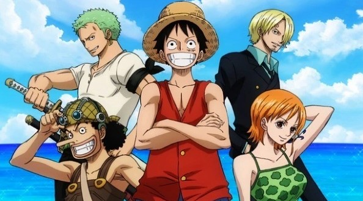

Resumo da primeira temporada - Saga East Blue
A saga que marca o começo de One Piece tem início nos mostrando como o protagonista Monkey D. Luffy acidentalmente consumiu a a fruta Akuma no Mi e ganhou suas habilidades de borracha ainda criança. Embora a fruta também tenha causado a perda de sua capacidade de nadar, ele não deixou que isso afetasse seu sonho de encontrar o tesouro One Piece e se tornar o Rei dos Piratas.
Com o passar dos anos, Luffy aprende a controlar melhor suas habilidades. No decorrer dos episódios, ele vai recrutando sua tripulação, vivendo diferentes aventuras e grandes perigos a cada novo tripulante que tenta convencer a se juntar a sua equipe.
Nesta saga, o protagonista enfreta diferentes conflitos. A luta contra um capitão da marinha. O embate com o perigoso pirata Buggy e o temido Capitão Kuro. A conquista do Going Merry (primeiro navio do grupo de Luffy). O momento em que fica frente à frente com o tirânico Arlong. Luffy passou por tudo isso conforme foi reunindo outros aventureiros em sua tripulação, os Piratas do Chapéu de Palha, até aqui formada por Luffy, Roronoa Zoro, Nami, Usopp e Sanji.